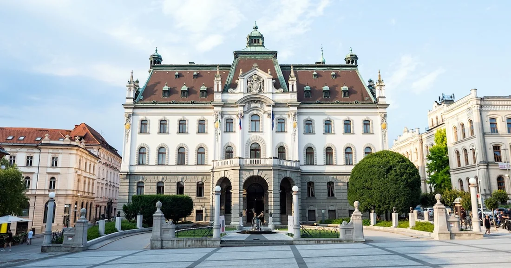
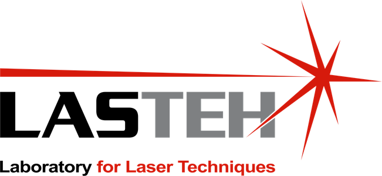

PhD Researcher in Mechanical Engineering
Laser Ultrasonics · Photoacoustics · 2D Materials
PhD researcher in laser ultrasonics, photoacoustics, and 2D-material composites.


Explore
Projects and research interests.
Journal articles and conference work.
Teaching and technical skills.